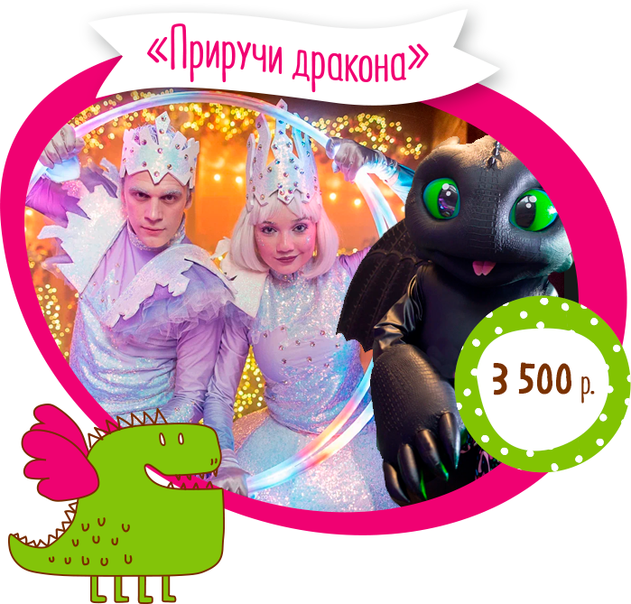
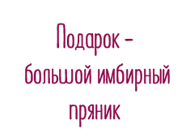
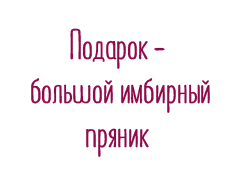
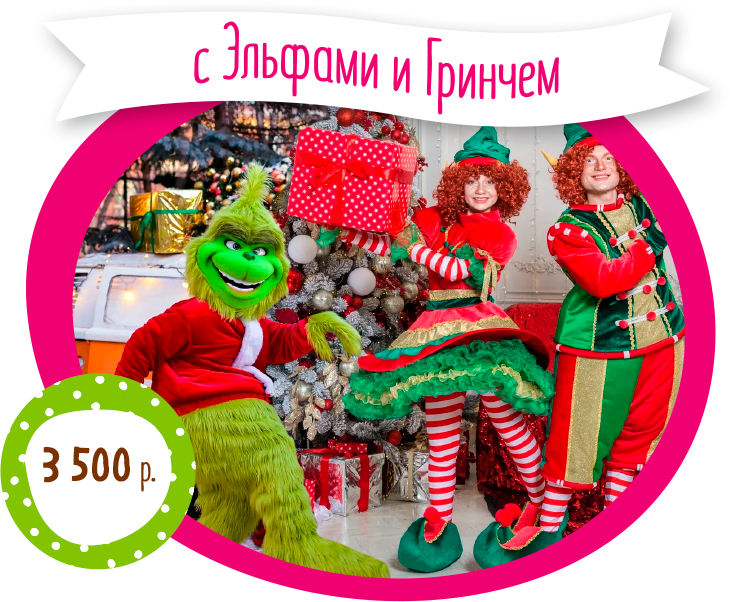
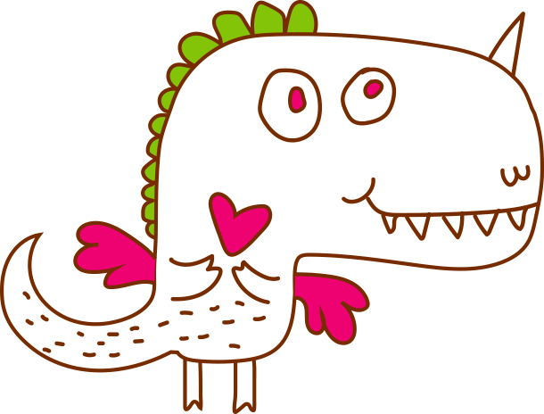

Приближается Год Дракона, животного с виду свирепого, страшного, огнедышащего, но, говорят, доброго, трогательного и верного внутри. Две совсем разные дороги лежат перед ним в 2024 - он может стать вредителем и разрушителем, а может - настоящим лучшим другом. Главное найти к нему подход!
Каким будет наш год? Сможем ли мы найти правильную дорожку к его сердцу? Станет ли наш дракон добрым и дружелюбным? Об этом и будет новогодний сезон “Приручи Дракона” в АндерСоне.
Новогодние ёлки
В этом году мы подготовили для вас три
волшебные новогодние программы
Новогодняя Елка
3‑6 лет
1 час 15 минут
Нас ждет встреча с настоящим новогодним чудом и знакомство с самими добрыми героями! Юная и талантливая фея снега Снежинка, очень дружелюбный фей Снежок и маленький милый дракончик Беззубик, который живет в лесу и дружит со всеми его обитателями. Он любит играть, веселиться и, конечно же, есть снег. Наши герои увлекут в незабываемую зимнюю сказку, полную волшебства и развлечений. Вместе мы научимся танцевать драконий танец и поучаствуем в настоящих воздушных гонках!
Что входит:
 
5‑7 лет
1 час 15 минут
Вспомните, когда в последний раз вы писали письмо? Не sms, не e-mail, а письмо. То самое! Настоящее! На бумаге, аккуратно выводя буквы и искренне веря, что в этот раз желание точно исполнится. Ведь не может быть такого, чтобы Дедушка Мороз потерял ваше письмо…
Дед Мороз и не терял, а вот Карамельный Эльф, который бежал по крышам и выполнял своё главное поручение, смог. Одно письмо от него ускользнуло…
Нашим героям (ёлочным игрушкам Новогоднему Дождику и Балерине Белле) пришлось его возвращать. Так и начались их приключения.
Что входит:

Новогодняя Сказка
8+ лет
1 час 15 минут
Два эльфа Итан и Оливия отправляются в лес, чтобы найти волшебную новогоднюю звезду. Но их путь преграждает Гринч, злой дух, который хочет украсть звезду и испортить праздник. Дети станут участниками волшебной истории, помогая эльфам преодолеть препятствия и, конечно, вернуть
новогоднюю звезду на елку!
Что входит:
Новогодний огонёк
Встреча с Дедом Морозом
2+ лет
30‑40 минут
Дедушка Мороз один или со своим Эльфом, лично поздравят маленьких любителей чудес с Новым годом и услышат их самые заветные желания! Они проверят, хорошо ли ребята вели себя в этом году и умеют ли веселиться. А потом, погрузив их в волшебную новогоднюю сказку, Дед Мороз подарит сладкий подарок от АндерСона.
Что входит:
А еще вы можете пригласить Дедушку Мороза к себе домой!
Новогодние мастер‑классы
Будем разукрашивать елочные игрушки, разрисовывать имбирные пряники, создавать своих динозавриков, даже делать домики для чая и просто классно проводить время в теплых уютных АндерСонах!
заказать 